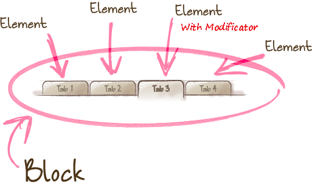

Created by Mikhail Nakanechny in reveal.js
BEM — Block Element Modifier is a methodology that helps you to create reusable components and code sharing in front-end development
BEM provides unified code generation and storage rules that help you scale and reuse code, increase productivity, and simplify team work.
BEM methodology is in great demand in the modern front-end market.
BEM is not just for CSS. it is about communicating between technologies and the people using them.
Blocks, elements, and modifiers are all called BEM entities.
B . e . m .
is Blocks.
Standalone entity that is meaningful on its own.
Blocks are represented by the class attribute
header,
container,
menu,
checkbox,
input,
etc...
- An independent, reusable part of your interface
- Can contain Elements and other Blocks
- Can contain one or more Modifiers
b . E . m .
is Elements.
A part of a block that has no standalone meaning and is semantically tied to its block.
menu item,
list item,
checkbox caption,
header title,
etc...
- Belongs to a Block, only has meaning there
- Can contain other Elements and Blocks
- Can contain one or more Modifiers
b . e . M .
is Modifiers.
A flag on a block or element. Use them to change appearance or behavior.
disabled,
highlighted,
checked,
fixed,
size big,
color yellow,
etc...
Modifiers features
- Belongs on a Block or Element
- Indicates a state different from the default
- Can also be a key value pair
The name of a BEM entity is unique.
The same BEM entity always has the same name in all technologies (CSS, JavaScript, and HTML). The primary purpose of the naming convention is to give names meaning so that they are as informative as possible for the developer.
block-name__elem-name_mod-name_mod-val
- Names are written in lowercase Latin letters.
- Words are separated by a hyphen (-).
- The block name defines the namespace
for its elements and modifiers.
- The element name is separated from the block name
by a double underscore (__).
- The modifier name is separated from the block
or element name by a single underscore (_).
- The modifier value is separated from the modifier name
by a single underscore (_).
- For boolean modifiers, the value is not included in the name.
To implement BEM principles in a project:
-Put aside the DOM model and learn to create blocks.
-Don't use ID selectors or tag selectors.
-Minimize the number of nested selectors.
-Use the CSS class naming convention in order to avoid name
ollisions and make selector names as informative and clear .
-Work in the terms of blocks, elements, and modifiers.
-Move CSS properties of a block to modifiers.
-Use mixes.
-Divide code into small independent parts.
-Re-use blocks.